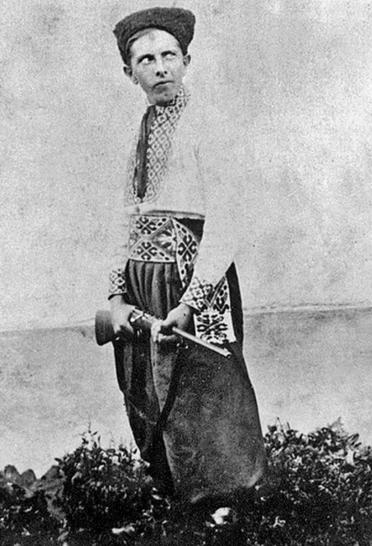

Степан Бандера родился 1 января 1909 года в селе Старый Угринов, которое на тот момент входило в Калушский уезд Королевства Галиции и Лодомерии Австро-Венгерской империи (сейчас это Калушский район Ивано-Франковской области). Отец Степана Бандеры был греко-католическим священником, а мать происходила из семьи священников Глодзинских. Всего в семье было семеро детей, Степан Бандера был вторым после самой старшей сестры Марты-Марии. Во время Первой мировой войны фронт четыре раза передвигался через родное село Степана Бандеры. С ноября 1918 года его отец был послом в парламент Западноукраинской Народной Республики — Украинский Национальный Совет — в Станиславе и активно участвовал в формировании государственной жизни Калущины. В том же году он добровольно вступил в Украинскую Галицкую армию, где в 1919—1920 годах служил капелланом 9-го полка Третьей Бережанской бригады УГА 2-го корпуса. В мае 1919 года во время наступления польских войск десятилетний Степан Бандера вместе с семьей был эвакуирован в подольский городок Ягельница, где они находились до сентября. В 1919 году Бандера поступил в украинскую гимназию в Стрые, где учился до 1927 года. В 1922 году он стал участником Пласта. В том же году его мать скончалась от туберкулеза. В середине 1927 года Степан Бандера сдал выпускные экзамены в гимназии и собирался поступить в Украинскую хозяйственную академию в городе Подебрады в Чехословакии, но польские власти отказались предоставить ему загранпаспорт. Поэтому до 1928 года он вынужден был оставаться в Старом Угринове. В это время он работал в читальне Просвиты, вел театрально-любительский кружок и хор, основал местное общество Луг (его члены проводили спортивные праздники и концерты, ставили представления и выступали с докладами, популяризируя украинскую национальную идею). Также он руководил организационно-учебной работой по линии подпольной Украинской военной организации (УВО) в близлежащих селах.
В сентябре 1928 года Степан Бандера переехал во Львов, где записался на агрономический отдел Высокой Политехнической Школы, которую так и не закончил из-за ареста. В студенческие годы он был членом украинского общества студентов политехники Основа и членом управы Кружка студентів-рільників.
Также он некоторое время работал в бюро общества Сільський Господар, занимавшемся развитием агрокультуры на западных украинских землях. В воскресенье и на праздники Бандера ездил с обществом Просвита в села Львовщины с докладами и помогал организовывать другие события. Он продолжал активно участвовать в Пласте, был также членом Украинского Студенческого Спортового Клуба (УССК), обществ Сокіл-Батько и Луг во Львове. Занимался несколькими видами спорта, в частности бегом, плаванием и лыжным спортом. В 1932—1933 годах Степан Бандера выполнял функцию заместителя краевого проводника, а в середине 1933 года был назначен краевым проводником ОУН и краевым комендантом УВО в Западной Украине. Под руководством Бандеры ОУН осуществила ряд карательных акций против представителей польских оккупационных властей. Три политических убийства ОУН в этот период получили значительную огласку. Первое из них — убийство школьного куратора Гадомского, которого обвиняли в уничтожении украинского обучения в школах и полонизации. Второе — убийство секретаря консульства СССР во Львове, одновременно являвшегося агентом ГПУ при НКВД, Алексея Майлова, которое было совершено в знак протеста против Голодомора в Украине. Третьим стало убийство министра внутренних дел Польши Бронислава Перацкого, руководившего акциями «пацификации» украинцев, в результате которых пострадали от побоев более тысячи человек и от семи до 35 человек погибли. Степан Бандера совершал общее руководство покушениями на Майлова и Перацкого. 14 июня 1934 года, за день до убийства Перацкого, Бандеру арестовали. До 13 января 1936 года продолжался Варшавский процесс, на котором Бандеру вместе с 11-ю другими обвиняемыми судили за принадлежность к ОУН и организацию убийства Перацкого. Сначала Бандеру приговорили к смертной казни, но затем приговор заменили пожизненным заключением. В тюрьме он находился до сентября 1939 года. После начала Второй мировой войны узникам-националистам удалось освободить Бандеру из одиночной камеры, где он находился, после чего он добрался до Львова. Во второй половине октября 1939 года Бандера вместе с братом Василием и с четырьмя членами ОУН нелегально пересек советско-немецкую демаркационную линию. В первой половине января 1940 года Бандера прибыл в Италию, где жил его брат Александр
После освобождения из польских тюрем в результате оккупации Польши Германией Степана Бандеры и группы молодых украинских националистов, которых он возглавил, они потребовали от руководства ОУН изменения ее выжидательной тактики и отстранения от руководства нескольких членов. Конфликт быстро привел к расколу — уже в феврале 1940 года образовался Революционный провод ОУН во главе с Бандерой. В результате этого ОУН раскололась на ОУН мельниковцев (их возглавлял полковник Андрей Мельник, утвержденный главой Провода украинских националистов за несколько месяцев до освобождения Бандеры) и ОУН бандеровцев (также ОУН-Б, Организация украинских националистов революционная, ОУН самостийников-государственников). 1−4 апреля 1941 года на II Великом Сборе ОУН-Б Бандеру официально избрали ее руководителем. Незадолго до немецко-советской войны Бандера инициировал создание в Кракове Украинского Национального Комитета для объединения украинских политических сил в борьбе за государственность. С согласия немецкого режима ОУН-Б сформировала батальоны Нахтигаль и Роланд, которые Бандера считал ядром будущей украинской армии, 30 июня 1941 Провод ОУН-Б провозгласил восстановление Украинского Государства во Львове. Из-за этого уже 5 июля 1941 года Бандеру арестовали гитлеровцы и отправили в Краков. Там от него потребовали отказаться от провозглашения украинской государственности, но он не стал этого делать. 30 июня 1941 года батальон Нахтигаль вступил во Львов и присутствовал на Акте Провозглашения Украинского государства. В июле 1941 года бойцы батальона участвовали в боях с красными под Винницей. Батальон Роланд был отправлен для поддержки немецких войск в Румынию, а затем в Молдову. Во время нападения Германии на СССР оуновцы-подпольщики подняли мощное антисоветское восстание, были случаи, когда отряды ОУН еще до прихода немцев занимали населенные пункты. Тем временем 9 июля Бандеру отправили в Берлин, где поместили в тюрьму гестапо на Лихтерфельде-Ост. 20 июля Бандеру снова перевели под домашний арест. В это время ему предлагали создать подконтрольный немцам Краевой совет, а впоследствии и Совещательный совет при Райхскомиссариате. Бандера отказался пойти на требования гитлеровцев. Когда в сентябре 1941 года немецким войскам удалось оцепить и захватить Киев, Степана Бандеру отправили в центральную тюрьму гестапо в камеру № 29 на Принцрегентштрассе. Одновременно провели массовые аресты членов ОУН на всех оккупированных немцами территориях в Украине и Европе, заключив в тюрьму полторы тысячи оуновцев. 30 июня 1941 Провод ОУН-Б провозгласил восстановление Украинского Государства во Львове. Из-за этого уже 5 июля 1941 года Бандеру арестовали гитлеровцы и отправили в Краков. Там от него потребовали отказаться от провозглашения украинской государственности, но он не стал этого делать. 30 июня 1941 года батальон Нахтигаль вступил во Львов и присутствовал на Акте Провозглашения Украинского государства. В июле 1941 года бойцы батальона участвовали в боях с красными под Винницей. Батальон Роланд был отправлен для поддержки немецких войск в Румынию, а затем в Молдову. Во время нападения Германии на СССР оуновцы-подпольщики подняли мощное антисоветское восстание, были случаи, когда отряды ОУН еще до прихода немцев занимали населенные пункты. Тем временем 9 июля Бандеру отправили в Берлин, где поместили в тюрьму гестапо на Лихтерфельде-Ост. 20 июля Бандеру снова перевели под домашний арест. В это время ему предлагали создать подконтрольный немцам Краевой совет, а впоследствии и Совещательный совет при Райхскомиссариате. Бандера отказался пойти на требования гитлеровцев. Когда в сентябре 1941 года немецким войскам удалось оцепить и захватить Киев, Степана Бандеру отправили в центральную тюрьму гестапо в камеру № 29 на Принцрегентштрассе. Одновременно провели массовые аресты членов ОУН на всех оккупированных немцами территориях в Украине и Европе, заключив в тюрьму полторы тысячи оуновцев. Двое братьев Степана Бандеры — Василий и Александр — погибли в концлагере Аушвиц в конце июля 1942 года. Третьего брата Богдана расстреляло гестапо. В июле 1941 года отца Степана Бандеры расстреляло в Киеве НКВД, а двух его сестер вывезли в лагеря в Сибири. Третья сестра Степана Бандеры на 10 лет попала в советские лагеря в 1946 году. В начале января 1942 года Бандеру разместили в камере-одиночке № 73 концлагеря Заксенгаузен. Из концлагеря Бандера был освобожден в сентябре 1944 года. После этого его перевезли в окрестности Берлина и снова содержали под домашним арестом, предложив сотрудничество в Украинском национальном комитете, однако он снова отказался. В конце декабря 1944 года гестапо перевело Бандеру в Берлин. 1 февраля 1945 года Бандера с семьей сбежал во время авиационных бомбардировок в Тироль. Оттуда он переехал в Вену.
Пока Бандера был в заключении, ОУН-Б руководил Николай Лебедь. В мае 1943 года он передал свои полномочия Роману Шухевичу. Незадолго до этого — в феврале 1943 года — по инициативе Шухевича была проведена III конференция ОУН, на которой было принято решение об активизации партизанской деятельности, начале вооруженной борьбы и создании Украинской повстанческой армии. Тогда же было решено вести двухфронтовую антинемецкую и антисоветскую борьбу. В феврале 1945 года на Крайовом более широком совещании Провода ОУН-Б на Украинских Землях Бандера вошел в руководство организации — вместе с Романом Шухевичем и Ярославом Стецько. А в 1947 году Бандера снова возглавил Провод ОУН-Б. Он решил продолжать вооруженную борьбу против Москвы в послевоенное время и организовывал краевую связь и боевые группы ОУН-Б, пока его не убили. Из-за своей деятельности Степан Бандера вместе с семьей вынужден был часто менять место жительства. К 1948 году они переезжали шесть раз. Из-за необходимости дать дочери хорошее образование, Бандера и его семья в 1954 году окончательно переехали в немецкий город Мюнхен, где он жил под именем Штефан Попель. 15 октября 1959 года Бандеру нашли еще живого в подъезде его дома на улице Крайтмайр, 7. Перед этим агент КГБ Богдан Сташинский из специального пистолета выстрелил в лицо Степану Бандере струей раствора цианида калия. Яд обнаружила медицинская экспертиза. Официальная советская пропаганда обвиняла в совершении этого преступления министра по делам беженцев ФРГ Теодора Оберлендера, с которым у Степана Бандеры были тесные связи в годы Второй мировой войны. Однако уже в начале 1960-х немецкий суд признал, что главным обвиняемым в убийстве Бандеры является советское правительство, а Сташинский был приговорен к восьми годам лишения свободы, из которых он отсидел четыре. 20 октября 1959 года Степана Бандеру похоронили на мюнхенском кладбище Вальдфридгоф. В интервью российской газете Комсомольская правда, обнародованном в номере за 6 декабря 2005 года, бывший глава КГБ СССР Владимир Крючков признал, что «убийство Степана Бандеры было одним из последних устранений КГБ насильственными методами нежелательных элементов».
В январе 2010 года Виктор Ющенко присвоил Степану Бандере звание героя Украины. 2 апреля 2010 Донецкий окружной административный суд признал незаконным и отменил этот указ. 23 июня 2010 года это же решение было подтверждено постановлением Донецкого апелляционного административного суда. В 2011 году Высший административный суд Украины окончательно отобрал звание героя у Бандеры.